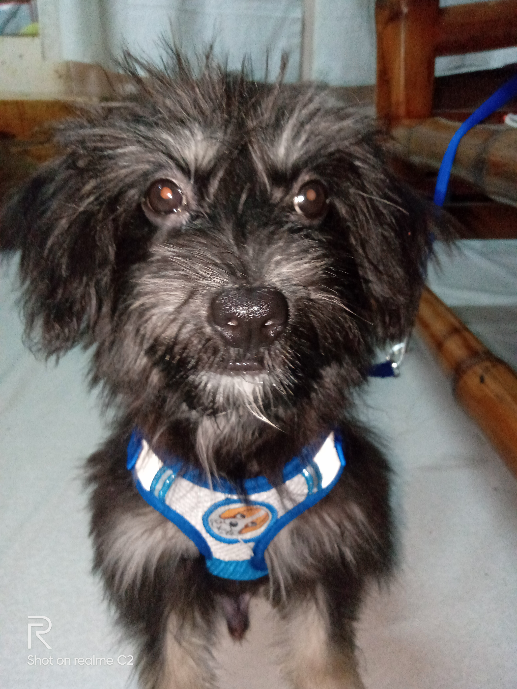
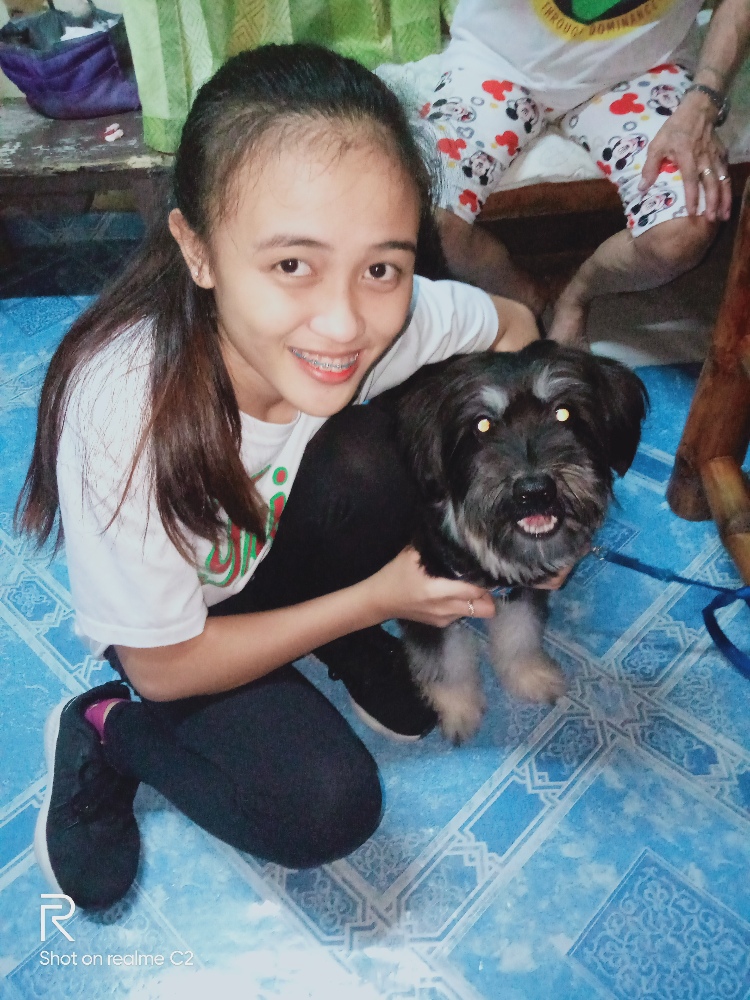

Before I start Im Jessica Ann B. Nuestro, I was born on Dec 10, 2001 resently residing at Acacia Pinagbuhatan Pasig City. My Father was a traffic enforcer in LGU since 2000. My Mother is a plain housewife we are three sibling in the family including me. I am now recently 1st year college studying at pamantasan ng lungsod ng pasig. I have ups in down in my life. ups, is when there is many of projects/assignment but I accomplish it all through the help and supprt from my family especially my Mom because shes always been there for me when I feel hard of many things. Down, when the time come to pass all my assignment but I can finish it all in time. I have also my pet dog , Kennie is his name and im his Mom he is one of my favorite and he makes me relax when I feel tired. Someday when the right time come if i have a family I want to like my family. Having a responsible Father caring mother and what ever obstacle or problems may come we are cool to solve it and thats because we suport each other...
 